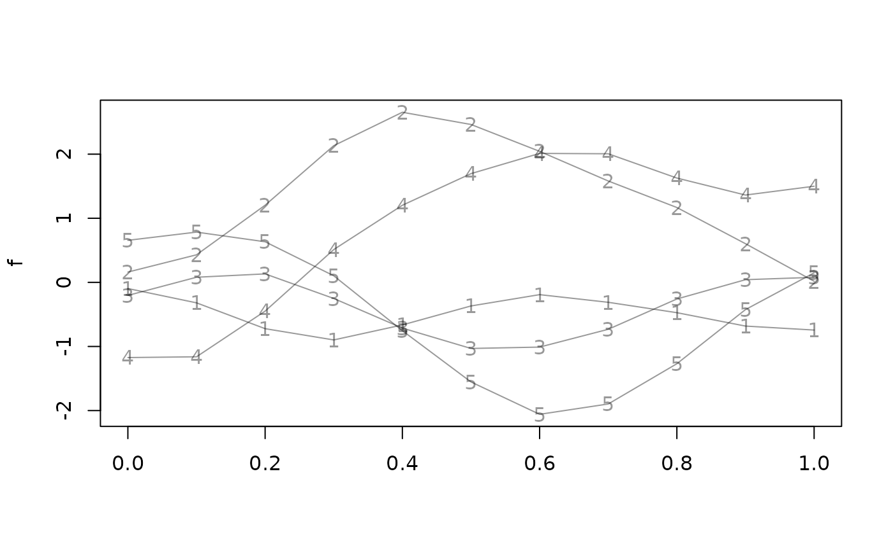

tf_where allows to define a logical expression about the function values
and returns the argument values for which that condition is true.tf_anywhere is syntactic sugar for tf_where with return = "any" to
get a logical flag for each function if the condition is TRUE anywhere,
see below.
Arguments
- f
a
tfobject.- cond
a logical expression about
value(and/orarg) that defines a condition about the functions, see examples and details.- return
for each entry in
f,tf_whereeither returns allargfor whichcondis true, the first, the last or their range or logical flags whether the functions fulfill the condition anywhere. For"range", note thatcondmay not be true for allargvalues in this range, though, this is not checked.- arg
optional
arg-values on which to evaluatefand checkcond, defaults totf_arg(f).
Value
depends on return:
return = "any", i.e,anywhere: a logical vector of the same length asf.return = "all": a list of vectors of the same length asf, with empty vectors for the functions that never fulfill thecondition.return = "range": a data frame with columns "begin" and "end".else, a numeric vector of the same length as
fwithNAfor entries offthat nowhere fulfill thecondition.
Details
Entries in f that do not fulfill cond anywhere yield numeric(0).cond is evaluated as a base::subset()-statement on a data.frame
containing a single entry in f with columns arg and value, so most
of the usual dplyr tricks are available as well, see examples.
Any condition evaluates to NA on NA-entries in f.
Examples
lin <- 1:4 * tfd(seq(-1, 1, length.out = 11), seq(-1, 1, length.out = 11))
tf_where(lin, value %inr% c(-1, 0.5))
#> [[1]]
#> [1] -1.0 -0.8 -0.6 -0.4 -0.2 0.0 0.2 0.4
#>
#> [[2]]
#> [1] -0.4 -0.2 0.0 0.2
#>
#> [[3]]
#> [1] -0.2 0.0
#>
#> [[4]]
#> [1] -0.2 0.0
#>
tf_where(lin, value %inr% c(-1, 0.5), "range")
#> begin end
#> 1 -1.0 0.4
#> 2 -0.4 0.2
#> 3 -0.2 0.0
#> 4 -0.2 0.0
a <- 1
tf_where(lin, value > a, "first")
#> [1] NA 0.6 0.4 0.4
tf_where(lin, value < a, "last")
#> [1] 0.8 0.4 0.2 0.2
tf_where(lin, value > 2, "any")
#> [1] FALSE FALSE TRUE TRUE
tf_anywhere(lin, value > 2)
#> [1] FALSE FALSE TRUE TRUE
set.seed(4353)
f <- tf_rgp(5, 11)
plot(f, pch = as.character(1:5), points = TRUE)

tf_where(f, value == max(value))
#> $`1`
#> [1] 0
#>
#> $`2`
#> [1] 0.4
#>
#> $`3`
#> [1] 0.2
#>
#> $`4`
#> [1] 0.6
#>
#> $`5`
#> [1] 0.1
#>
# where is the function increasing/decreasing?
tf_where(f, value > dplyr::lag(value, 1, value[1]))
#> $`1`
#> [1] 0.4 0.5 0.6
#>
#> $`2`
#> [1] 0.1 0.2 0.3 0.4
#>
#> $`3`
#> [1] 0.1 0.2 0.6 0.7 0.8 0.9 1.0
#>
#> $`4`
#> [1] 0.1 0.2 0.3 0.4 0.5 0.6 1.0
#>
#> $`5`
#> [1] 0.1 0.7 0.8 0.9 1.0
#>
tf_where(f, value < dplyr::lead(value, 1, tail(value, 1)))
#> $`1`
#> [1] 0.3 0.4 0.5
#>
#> $`2`
#> [1] 0.0 0.1 0.2 0.3
#>
#> $`3`
#> [1] 0.0 0.1 0.5 0.6 0.7 0.8 0.9
#>
#> $`4`
#> [1] 0.0 0.1 0.2 0.3 0.4 0.5 0.9
#>
#> $`5`
#> [1] 0.0 0.6 0.7 0.8 0.9
#>
# where are the (interior) extreme points (sign changes of `diff(value)`)?
tf_where(
f,
sign(c(diff(value)[1], diff(value))) !=
sign(c(diff(value), tail(diff(value), 1)))
)
#> $`1`
#> [1] 0.3 0.6
#>
#> $`2`
#> [1] 0.4
#>
#> $`3`
#> [1] 0.2 0.5
#>
#> $`4`
#> [1] 0.6 0.9
#>
#> $`5`
#> [1] 0.1 0.6
#>
# where in its second half is the function positive?
tf_where(f, arg > 0.5 & value > 0)
#> $`1`
#> numeric(0)
#>
#> $`2`
#> [1] 0.6 0.7 0.8 0.9 1.0
#>
#> $`3`
#> [1] 0.9 1.0
#>
#> $`4`
#> [1] 0.6 0.7 0.8 0.9 1.0
#>
#> $`5`
#> [1] 1
#>
# does the function ever exceed?
tf_anywhere(f, value > 1)
#> 1 2 3 4 5
#> FALSE TRUE FALSE TRUE FALSE